interpclosed documentation
The interpclosed function creates piecewise polynomial fits of 2D closed curves given by a set of points. The function can be used to (i) return the fit itself; (ii) interpolate values within the curve using an arc-length parametrization; or (iii) return the area, perimeter and centroid of the curve. interpclosed was inspired largely by the functions cscvn, interparc and arclength.
Contents
Syntax
xyq = interpclosed(x,y,tq)
[len,area] = interpclosed(x,y)
[len,area,c] = interpclosed(x,y)
[len,area,c,I] = interpclosed(x,y)
pp = interpclosed(x,y,'pp')
[xyq,len,area] = interpclosed(x,y,tq)
[xyq,len,area,c] = interpclosed(x,y,tq)
[xyq,len,area,c,I] = interpclosed(x,y,tq)
[___] = interpclosed(_,method)
[___] = interpclosed(_,print)
Description
xyq = interpclosed(x,y,tq) interpolates new data points xyq at given positions defined by the array tq, along the closed curve defined by the points specified by x and y. xyq is a 2-by-n array containing the x-y points corresponding to the query parameter positions defined in the n-by-1 array tq. The elements of tq can only take values between 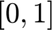, with 0 being the first point of the curve, 1 the last one and 0.5, for example, being in the middle of the length of the curve. The default method 'spline' is used.
[len,area] = interpclosed(x,y) returns the perimeter len and area area of the interpolated curve.
[len,area,c] = interpclosed(x,y) returns the perimeter, the area and the centroid c of the interpolated curve.
[len,area,c,I] = interpclosed(x,y) returns the perimeter, the area, the centroid c, and second moments of area I of the interpolated curve.
pp = interpclosed(x,y,'pp') returns the piece-wise polynomial pp, which is a parametrization of the fit of x and y in the form 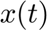 and 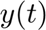.
[xyq,len,area] = interpclosed(x,y,tq) returns the new data points and the perimeter and area.
[xyq,len,area,c] = interpclosed(x,y,tq) returns the new data points and the perimeter, area, and centroid.
[xyq,len,area,c,I] = interpclosed(x,y,tq) returns the new data points and the perimeter, area, centroid and second moments of area.
[___] = interpclosed(_,method) specifies the string method: 'linear', 'spline', or 'pchip'. The default method is 'spline'.
[___] = interpclosed(_,print) additionaly prints some figures to show the results. For printing 64 equally arc-length spaced points are used.
Examples
The Interpolated Batman
This first example only serves as a way to show off the power of the function, for more specific application examples, see the ones below.
The so-called Batman function is a somewhat complex piecewise function. To construct it, 6 functions have to be defined between certain values of 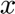 and 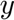. You can find more information about the Batman function here and here.
We, on the other hand, will create it as a piecewise polynomial function that delivers very good results, out of a bunch of carefully selected points.
First, we have to define the dataset and plot it to see what it looks like. Since the Batman function is symmetric around the y-axis, we just need the half of the actual points, then we can flip the arrays and append them conveniently. A minimum set of points was selected by choosing only the points defining vertices, and, when a curve was necessary, just one middle-point.
x = [0 0.5 0.5 0.75 0.75 1 1 2 3 3 7 4 4 3 2 2 1 0]; y = [2.25 2.25 2.25 3 3 1 1 0.863142928 2.717392773 2.717392773 ... 0 -2.46195542 -2.46195542 -1.32235 -2.365485004 -2.365485004 ... -1.59137226 -3]; x = [x, -fliplr(x)]; y = [y,fliplr(y)]; figure, plot(x,y,'o'), axis equal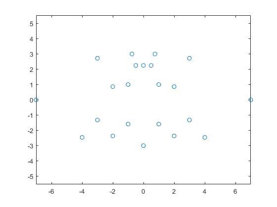
This doesn't look as terrifying as the dark knight, but we will fix this in a bit. Please note that some points are given twice, this is done to indicate that the 1st derivative at those points does not have to be continuous. This idea was taken from the function cscvn and was extended to the pchip fit here. For more information, go here.
Then fit and plot 300 equally spaced interpolation points, quite awesomely.
n = 300; xyq = interpclosed(x,y,0:1/n:1); figure, fill(xyq(1,:),xyq(2,:),'k'), hold on plot(x,y,'yo','MarkerFaceColor',[1 .93 .22]), axis equal, grid on legend('Batman','Original points')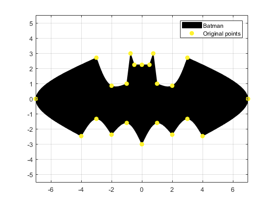
The result is pretty legendary and was only created with 12 distinct points and knowledge about the continuity of the derivatives at those points. The bat-signal's orientation in 2D space is quite obvious to detect, this is down to the fact that its principal axes are easy to find. For instance, the signal has symmetry around the y-axis. This makes this particular shape useful to show the calculations that produce the geometric moments: area, centroid and second moment of area. The task will be to identify both a random rotation and translation of the shape. Let's make a figure with four subplots and assign an equal number of rotation and translations. Then compute the area, centroid, and second moment of area. This last piece of information will give us the information about the roration.
% Define the rotations and translations rot = 2*pi*rand(1,4); dx = (-50+100*rand(1,4)); dy = (-50+100*rand(1,4)); % Create the figure figure for ii = 1:4 % Compile the x and y vectors into a matrix xy = [x;y]; % Rotate around (0,0) R = [cos(rot(ii)) -sin(rot(ii)); sin(rot(ii)) cos(rot(ii))]; xy = R*xy; % Translate xn = xy(1,:)+dx(ii); yn = xy(2,:)+dy(ii); % Interpolate and find the area, centroid and second moments of area [xyq,~,area,c,I] = interpclosed(xn,yn,0:1/n:1); % Create the subplot subplot(2,2,ii), hold on % Show the bat-signal fill(xyq(1,:),xyq(2,:),'k'), hold on % Create the x- and y-axes before rotation xaxis = [-1,1;0,0]*5.25; yaxis = [0,0;-1,1]*7; % Use the second moments of area to find the rotation theta = -atan2(2*(I(3)-area*c(1)*c(2)),... ((I(1)-area*c(2)^2)-(I(2)-area*c(1)^2)))/2; % Construct the rotation matrix again R = [cos(theta) -sin(theta); sin(theta) cos(theta)]; % Rotate the axes xaxis = R*xaxis; yaxis = R*yaxis; % Plot the axes plot(xaxis(1,:)+c(1),xaxis(2,:)+c(2),'r','LineWidth',1) plot(yaxis(1,:)+c(1),yaxis(2,:)+c(2),'r--') axis equal, grid on end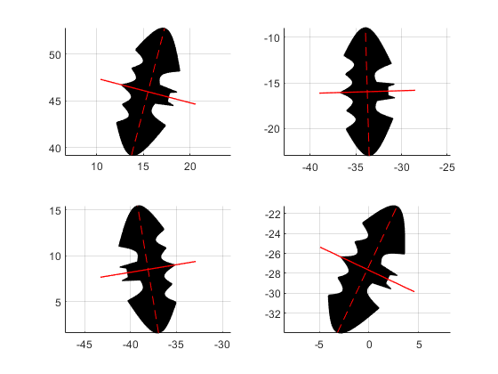
With the help of the second moments of area we detected the rotation of the bat-signal every time.
Interpolation of a coarsely sampled circle
Going into some actual application examples, with numbers and stuff, let's define the sample points t, and the corresponding sample values x and y, describing a coarsely sampled circle with center at (0.2,-0.2).
t = linspace(0,2*pi,9); x = sin(t) + 0.2; y = cos(t) - 0.2;
Define a finer sampling, let's say, eight times finer, given by tq, and interpolate the closed curve at the query points. Finally plot the results.
tq = 0:1/(8*(numel(t)-1)):1; xyq = interpclosed(x,y,tq); figure plot(x,y,'o',xyq(1,:),xyq(2,:),':.'); axis equal title('(Default) Spline Interpolation');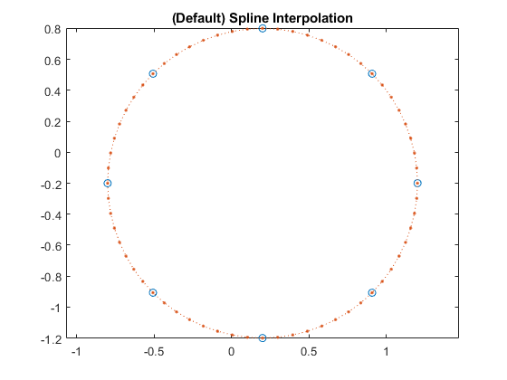
Interpolate again, but this time return the perimeter, area, centroid, and second moment of area of the fitted piece-wise polynomial. Then print to the console the results and the analytical values to compare.
[len,area,c,I] = interpclosed(x,y); fprintf(['Perimeter: %4.5f, Area: %4.5f,\n',... 'Centroid: [%4.5f %4.5f], Iz: %4.5f\n',... 'To be compared to\n',... '2*pi: %4.5f, pi: %4.5f,\n',... 'Centroid: [%4.5f %4.5f], pi/2: %4.5f\n'],... len,area,c,(I(1)-area*c(2)^2+I(2)-area*c(1)^2),... 2*pi,pi,[0.2,-0.2],pi/2)
Perimeter: 6.27938, Area: 3.13776, Centroid: [0.20000 -0.20000], Iz: 1.56696 To be compared to 2*pi: 6.28319, pi: 3.14159, Centroid: [0.20000 -0.20000], pi/2: 1.57080
Interpolation of a heart-waming set of points
As shown in the Batman example, if a point is given twice at neighboring positons, the 1st derivatives of the piece-wise fit at this point will no longer be equal. For this example, take the dataset given in the documentation of the MATLAB® function cscvn, fit the data with all the available methods and finally plot the results in a single figure using a small step.
x = [0 .82 .92 0 0 -.92 -.82]; y = [.66 .9 0 -.83 -.83 0 .9]; tq = 0:0.01:1; xyqS = interpclosed(x,y,tq); xyqL = interpclosed(x,y,tq,'linear'); xyqP = interpclosed(x,y,tq,'pchip'); figure, plot(x,y,'o',xyqS(1,:),xyqS(2,:),xyqL(1,:),xyqL(2,:),xyqP(1,:),xyqP(2,:)) axis equal, legend('Points','Spline','Linear','Pchip')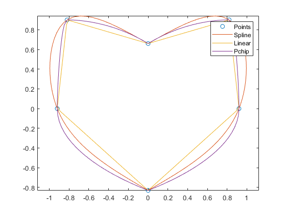
Please note that this time the given points do not describe a closed shape on their own. However, the function added the last point, corresponding with the first point of the set.
By giving as an input a logical variable print, an additional figure is plotted. This can be used to understand what is going on in the function under the hood. To showcase the plot, take the heart-shaped set of points, but this time remove the duplicate points. Then perform a linear fit, enable the print variable and return the piece-wise polynomial.
x = [0 .82 .92 0 -.92 -.82]; y = [.66 .9 0 -.83 0 .9]; pp = interpclosed(x,y,'pp','linear',true);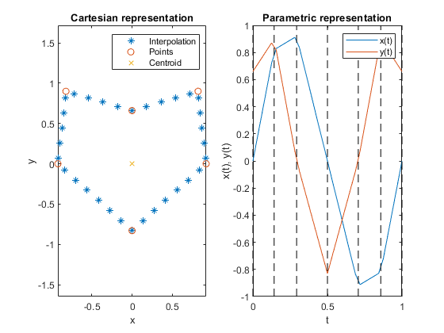
The parametric representation shows how the piece-wise fitting works. The same can be repeated with, for example, the spline fit, but this time, return the perimeter and the area.
[len, area] = interpclosed(x,y,'spline',true); fprintf('Perimeter: %4.5f\nArea: %4.5f\n',len,area);
Perimeter: 6.29776 Area: 2.61846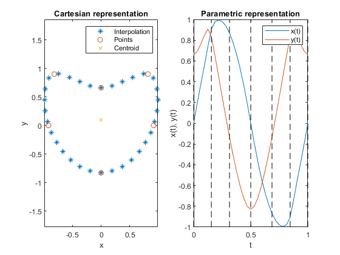
Please note at this point how the spline fitting is way smoother than the linear one (obviously), not only in the cartestian but also in the parametric representation.
Let's now compute the derivatives of the piecewise functions at the start/end point for the three fitting options and see what happens. This is a key test to verify if the perpetual interpolation works correctly for the methods that allow it. To do this, we'll need the piece-wise polynomials, then we will derive them twice and finally we'll compute the derivatives at the desired points.
ppS = interpclosed(x,y,'pp'); ppL = interpclosed(x,y,'pp','linear'); ppP = interpclosed(x,y,'pp','pchip'); dppS = fnder(ppS,1); dppL = fnder(ppL,1); dppP = fnder(ppP,1); ddppS = fnder(ppS,2); ddppL = fnder(ppL,2); ddppP = fnder(ppP,2); fprintf(['''linear'':\n','1st derivative at start (x,y): %4.5f %4.5f\n',... '1st derivative at end (x,y): %4.5f %4.5f\n',... '2nd derivative at start (x,y): %4.5f %4.5f\n',... '2nd derivative at end (x,y): %4.5f %4.5f\n'],ppval(dppL,0),... ppval(dppL,dppL.breaks(end)),ppval(ddppL,0),... ppval(ddppL,ddppL.breaks(end))); fprintf(['''pchip'':\n','1st derivative at start (x,y): %4.5f %4.5f\n',... '1st derivative at end (x,y): %4.5f %4.5f\n',... '2nd derivative at start (x,y): %4.5f %4.5f\n',... '2nd derivative at end (x,y): %4.5f %4.5f\n'],ppval(dppP,0),... ppval(dppP,dppP.breaks(end)),ppval(ddppP,0),... ppval(ddppP,ddppP.breaks(end))); fprintf(['''spline'':\n','1st derivative at start (x,y): %4.5f %4.5f\n',... '1st derivative at end (x,y): %4.5f %4.5f\n',... '2nd derivative at start (x,y): %4.5f %4.5f\n',... '2nd derivative at end (x,y): %4.5f %4.5f\n'],ppval(dppS,0),... ppval(dppS,dppS.breaks(end)),ppval(ddppS,0),... ppval(ddppS,ddppS.breaks(end)));
'linear': 1st derivative at start (x,y): 0.95974 0.28090 1st derivative at end (x,y): 0.95974 -0.28090 2nd derivative at start (x,y): 0.00000 0.00000 2nd derivative at end (x,y): 0.00000 0.00000 'pchip': 1st derivative at start (x,y): 0.95974 0.00000 1st derivative at end (x,y): 0.95974 -0.00000 2nd derivative at start (x,y): 1.77933 1.97260 2nd derivative at end (x,y): -1.77933 1.97260 'spline': 1st derivative at start (x,y): 1.03558 0.00000 1st derivative at end (x,y): 1.03558 0.00000 2nd derivative at start (x,y): -0.00000 2.11655 2nd derivative at end (x,y): 0.00000 2.11655
As it can be seen in the documentation of interp1, the continuity of each of the methods here presented is consistent with the mathematical definitions at the start/end points of the closed curves, thus verifying that the curves are indeed perpetual .This means that the 'linear' fit has no continuous derivatives (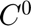), the 'pchip' fit has only one continuous derivative (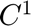) and the 'spline' fit hast two continuous derivatives (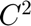).
Interpolation of sets of points describing a polygon
This kind of application can be solved only (one more time, obviously) by the linear interpolation. To illustrate the application, create a series of regular polygons inscribed in a circle of radius 1, return the perimeter and area of each polygon and compare it to the analytical values.
for ii = 4:13 t = linspace(0,2*pi,ii); x = cos(t) + pi; y = sin(t)-2*pi; [len,area,c,I] = interpclosed(x,y,'linear'); Ix = I(1)-area*c(2)^2; Iy = I(2)-area*c(1)^2; lenA = (ii-1)*2*sin(pi/(ii-1)); % Analytical perimeter of inscribed polygon areaA = 0.5*(ii-1)*sin(2*pi/(ii-1)); % Analytical area of inscribed polygon IxA = (ii-1)/48*(4*sin(2*pi/(ii-1))+sin(4*pi/(ii-1))); IyA = IxA; lendiff(ii-3) = len - lenA; areadiff(ii-3) = area - areaA; Ixdiff(ii-3) = Ix - IxA; Iydiff(ii-3) = Iy - IyA; end fprintf(['Diff. analytical and computed perimeter: %4.5f\n',... 'Diff. analytical and computed area: %4.5f\n',... 'Diff. analytical and computed 2nd moment of area around x: %4.5f\n',... 'Diff. analytical and computed 2nd moment of area around y: %4.5f\n'],... sum(abs(lendiff)),sum(abs(areadiff)),sum(abs(Ixdiff)),sum(abs(Iydiff)));
Diff. analytical and computed perimeter: 0.00000 Diff. analytical and computed area: 0.00000 Diff. analytical and computed 2nd moment of area around x: 0.00000 Diff. analytical and computed 2nd moment of area around y: 0.00000
Please note that we compared the sum of the absolute value of the difference between the computed and analytical results. A result of zero means that throughout all polygons the perimeter, area, and second moments of area were correctly computed.
See also
cscvn, pchip, mkpp, ppval, interparc, arclength, interp1, pdearcl
About
Programmed by Santiago M. Benito at the Chair of Materials Technology of the Ruhr-Universität Bochum. This programs contains snippets from the functions cscvn, arclength and interparc, thanks go to their respective authors.